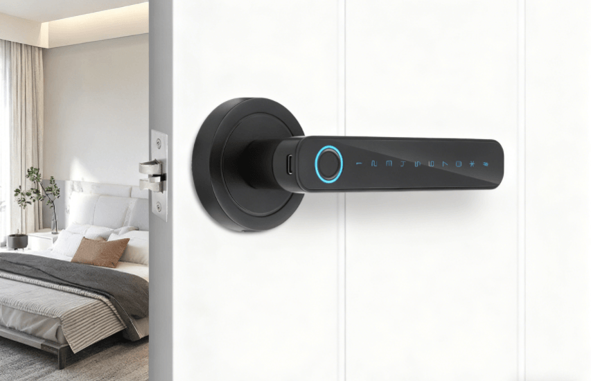
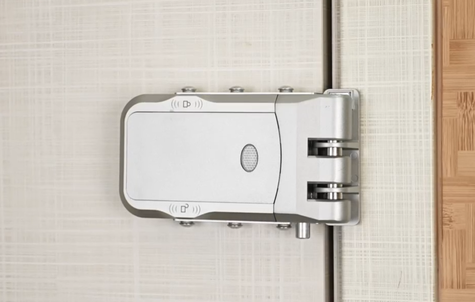
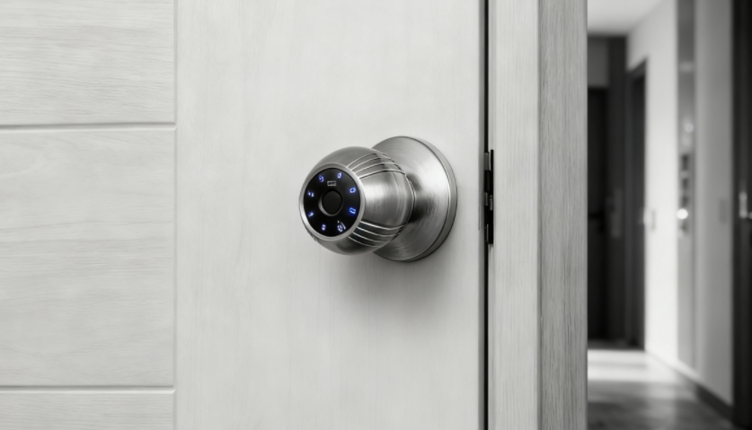
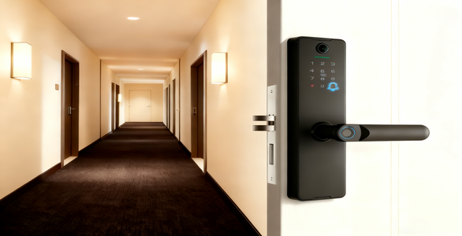

Fabricante OEM/ODM de Fechadura Remota Invisível
A Shenzhen Huafu Intelligent Technology Co., Ltd. possui mais de 13 anos de experiência em P&D e fabricação de fechaduras inteligentes. Como um fabricante profissional de fechaduras inteligentes OEM/ODM, focamos em fornecer fechaduras remotas invisíveis, fechaduras de entrada sem chave e soluções de fechaduras para atacado para marcas globais, importadores e distribuidores.
Somos especializados no desenvolvimento de fechaduras inteligentes personalizadas, integrando controle remoto sem fio, reconhecimento biométrico e tecnologias avançadas de segurança. Nossa linha de produtos inclui fechaduras remotas invisíveis, fechaduras de entrada sem chave, fechaduras inteligentes de maçaneta e outras soluções de segurança inteligente projetadas para residências, apartamentos, hotéis e projetos comerciais.
Com forte capacidade de engenharia e um sistema de fabricação ágil, a WAFU oferece serviços OEM/ODM de fechaduras inteligentes que suportam personalização de marca e produção em grande escala. Como um fornecedor confiável de fechaduras inteligentes, entregamos qualidade consistente, preços competitivos e soluções escaláveis de fechaduras para mercados globais.
Fechaduras Inteligentes WAFU
Fechaduras inteligentes de alto desempenho projetadas para residências, apartamentos e segurança comercial.

WF-019 Fechadura Remota Invisível
Instalação invisível com criptografia RF de nível militar, controle remoto 360° e bateria de longa duração — ideal para residências e propriedades de aluguel.
Ver detalhes da WF-019
WF-026 Fechadura Remota Invisível
Estrutura antirroubo aprimorada com controle remoto criptografado por RF, eficiência energética estável e instalação totalmente oculta para máxima proteção da porta.
Ver detalhes da WF-026
WF-X8 Fechadura Inteligente com Olho Mágico
Fechadura inteligente com olho mágico Wi‑Fi, desbloqueio instantâneo pelo celular, reconhecimento de impressão digital em 0,3 segundos e dupla proteção de segurança para apartamentos modernos e casas inteligentes.
Ver detalhes da WF-X8
WF-Q7 Fechadura Inteligente de Maçaneta Esférica
Maçaneta esférica forjada em peça única, desbloqueio por toque em múltiplos ângulos e chip biométrico de nível bancário — simples, rápida e segura para o uso diário.
Ver detalhes da WF-Q7Cenários de Aplicação
Soluções personalizadas e suporte técnico para qualquer necessidade de fechaduras inteligentes

Residência
Soluções de alta segurança que suportam impressão digital, senha, aplicativo móvel e muito mais, mantendo sua família protegida.
Ver Produtos Residenciais
Escritório
Projetadas para ambientes corporativos — gerencie fechaduras remotamente e atribua permissões de acesso para aumentar eficiência e segurança.
Ver Produtos para Escritórios
Apartamento
Sistemas avançados de fechaduras inteligentes com múltiplos métodos de acesso para garantir uma vida segura e conveniente.
Ver Produtos para Apartamentos
Hotel
Fechaduras inteligentes em rede para hotéis — compatíveis com cartões RFID e chaves móveis — melhorando a experiência do hóspede e a eficiência da gestão.
Ver Produtos para HotéisPor que escolher as fechaduras inteligentes WAFU
Projetadas para projetos OEM/ODM e fornecimento em larga escala, as fechaduras WAFU oferecem soluções inteligentes confiáveis, seguras e personalizáveis.
Sistema de Segurança Avançado
Controle remoto com criptografia RF, reconhecimento biométrico por semicondutor e proteção antiviolação em múltiplas camadas garantem segurança de nível profissional para projetos residenciais e comerciais.
Tecnologia de Fechadura Inteligente Patenteada
O design exclusivo de sistema duplo e motor duplo garante operação contínua — ideal para marcas que buscam soluções OEM/ODM estáveis e de longo prazo.
Confiabilidade de Grau Industrial
Mais de 100.000 ciclos de resistência, MTBF ≥ 200.000 ciclos e desempenho em ampla faixa de temperatura (-30°C a 70°C) garantem funcionamento consistente em ambientes globais.
Suporte Completo OEM/ODM
Do design estrutural à personalização de firmware, nossa equipe de engenharia oferece suporte completo para personalização de marca, produção em massa e cooperação de longo prazo.
Cenários de Aplicação Flexíveis
Soluções adaptadas para residências, apartamentos, hotéis, escritórios e imóveis para aluguel — compatíveis com vários tipos de portas e requisitos de instalação.
Confiada por Mercados Globais
Certificações CE, FCC e RoHS, exportada para mais de 60 países com fornecimento estável — apoiando distribuidores, importadores e marcas internacionais de segurança inteligente.
Perguntas Frequentes
-
Somos especializados em serviços completos OEM/ODM, incluindo design de hardware, personalização de software, embalagem e desenvolvimento de manuais para marcas globais.
-
1. Todos os produtos têm 1 ano de garantia;
2. Durante o período de garantia, nossa fábrica oferece substituição gratuita;
3. Após a garantia, fornecemos peças de reposição e manutenção com serviço pago;
4. Suporte técnico disponível durante todo o atendimento pós-venda. -
Pedidos de amostra ficam prontos para envio em até 3 dias. Pedidos em grande volume ficam prontos em cerca de uma a duas semanas.
-
Temos mais de 13 anos de desenvolvimento contínuo junto aos nossos clientes. Conhecemos as necessidades do mercado e de nossos parceiros. Contamos com equipamentos profissionais de produção e testes, além de fortes departamentos de QC e P&D. Cada produto segue rigorosos padrões de qualidade. Compre de nós com total confiança.
-
1. Fornecemos amostras para teste;
2. Após aprovação, nossa equipe ajusta conforme necessário e inicia a produção;
3. Durante a produção, realizamos FQC, IQC, IPQC e OQC para controle de qualidade;
4. Realizamos inspeção final antes do envio para evitar qualquer problema. -
Sim. Aceitamos pedidos de amostra e pedidos piloto para que os parceiros avaliem a qualidade do produto e a resposta do mercado antes de ampliar a produção.
-
Todos os produtos passam por testes rigorosos e atendem aos padrões internacionais, incluindo CE, RoHS, FCC, UKCA e EN18031.
Contacte-nos
Quer necessite de branding OEM ou personalização funcional ODM, a nossa equipa de projeto entrará em contacto consigo dentro de 24 horas após o envio do formulário e fornecerá uma solução completa e personalizada de fechadura inteligente.
Endereço
2F, Edifício 6, Parque Eco-Industrial Sha-Yi, 496 Chuangcheng
Rd,Subdistrito de Shajing, Distrito de Bao’an, Shenzhen, China
Telefone
+86 15914193183 (mesmo número para WhatsApp)
wafutechnology@outlook.com
wafutechnology@gmail.com
Consulta Gratuita
Notícias do Setor
Atualizações mais recentes sobre tecnologias WAFU e tendências do mercado de fechaduras inteligentes
Centro de Notícias

As Fechaduras Inteligentes Invisíveis da WAFU Estreiam na Feira de Alta Tecnologia de Shenzhen
21 Abr 2026
No Centro de Convenções e Exposições de Shenzhen, a Feira de Alta Tecnologia abriu sob o tema “Impulsionar a Inovação, Acelerar o Desenvolvimento Verde”. A WAFU apresentou sua gama completa de fechaduras invisíveis e fechaduras inteligentes com controlo remoto, atraindo grande atenção de visitantes nacionais e internacionais já no primeiro dia.

A WAFU Lock Industry participou na Feira de Alta Tecnologia de Shenzhen
04 Mar 2026
A Feira de Alta Tecnologia de Shenzhen foi oficialmente inaugurada no Centro de Convenções e Exposições de Shenzhen, com o tema “Desenvolvimento impulsionado pela inovação e aceleração do crescimento verde”. O evento apresentou as mais recentes tecnologias inteligentes, inovações de alto nível e produtos ecológicos, destacando a forte integração entre tecnologia inteligente e desenvolvimento sustentável.
Artigos Técnicos
Como os distribuidores podem construir um portefólio de produtos centrado em fechaduras inteligentes invisíveis
12 Mai 2026
Os distribuidores que pretendem expandir o seu negócio no segmento de controlo de acesso inteligente devem considerar a criação de uma linha de produtos dedicada às fechaduras invisíveis. As fechaduras invisíveis sem fios oferecem design elegante, elevada segurança e margens interessantes para revendedores e parceiros. Este guia explica estratégia de SKU, preços e promoção de portefólio OEM/ODM.
Como Escolher um Fabricante de Fechaduras Invisíveis: Qualidade, Estrutura e Certificação
15 Abr 2026
Escolher o fabricante certo de fechaduras invisíveis é essencial para garantir a confiabilidade do produto, o desempenho a longo prazo e a conformidade com padrões internacionais de segurança. Um fabricante de alta qualidade deve demonstrar forte capacidade de engenharia, processos de produção estáveis e certificações completas para os mercados globais. Este guia explica os principais fatores a avaliar antes de selecionar um fornecedor de fechaduras inteligentes invisíveis.
Por Que as Fechaduras Invisíveis São Ideais para Inquilinos e Proprietários
09 Abr 2026
Com a crescente demanda por imóveis para aluguel, tanto inquilinos quanto proprietários buscam maneiras mais eficazes de melhorar a segurança interna sem danificar a propriedade ou criar complicações de gestão. As fechaduras invisíveis — com instalação oculta, controle sem fio e design não destrutivo — tornaram-se uma das soluções mais práticas para ambientes modernos de aluguel.

WhatsApp:
+86 15914193183
Telefone: +86 15914193183
Email: wafutechnology@gmail.com